Joocbox GowoonDar MBE 由韩国最优秀的酿酒大师、韩国代表性的高端传统白酒 Mungyeong Oh Minara Lee Jong-ki 的《Kowundal Master Blenders Edition》制作的白酒行业首个 NFT 由 NFT 出版。 Jukebo
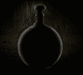 Joocbox GowoonDar MBE 由韩国最优秀的酿酒大师、韩国代表性的高端传统白酒 Mungyeong Oh Minara Lee Jong-ki 的《Kowundal Master Blenders Edition》制作的白酒行业首个 NFT 由 NFT 出版。 Jukebo
Joseon Dynasty Omnibus 朝鲜王朝 more_horiz 京东人#901，销售将于 2022 年 9 月 1 日下午 2:14 GMT+8结束 ，朝鲜王朝第901大人。朝鲜王朝第901代人。 欢迎来到神秘的朝鲜王朝。朝鲜
Josh Pierce - Peace 乔什·皮尔斯数据 创建于 1 年多前，1,360 代币供应，10% 费用 过去 7 天没有出售 Josh Pierce。 Nifty Gateway 的 Josh Pierce 的系列。 皮尔斯专注于超现实和自然主题
Joweys Official Collection Joweys 是以太坊区块链上最伟大的 PFP 的集合。 没有白名单，没有 Discord，没有路线图，也没有虚假承诺。 Joweys 是以太坊区块链上最伟大的 PFP 的集合。 Joweys 官方合
Joy Fellaz 乔伊费拉兹数据 创建于 7 个月前，1,943 代币供应，7.5% 费用 过去 7 天没有售出 Joy Fellaz。 Joy Fellaz 是 2222 件色彩缤纷的艺术品的独特收藏。每一个都
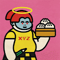 JPG PEOPLE by Debbie Tea JPG PEOPLE by Debbie Tea 统计 创建于 8 个月前，8,888 代币供应，8% 费用 7,490 名 Discord 成员 JPG PEOPLE by Debbie Tea NFTs 在过去 7 天内售出 37 次。Debbie Tea 的 JPG PEOPLE 的总销售额为 819.93 美元
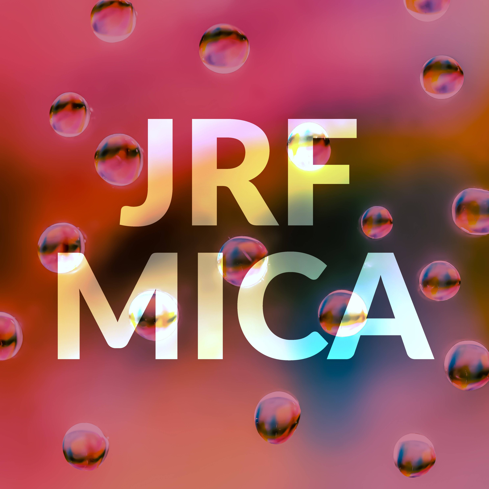 JRF-MICA JRF-MICA 是 James Richard Fry 的多媒体生成艺术系列。 粉笔水玻璃矢量生成 1,111 个独特的部分。 所有原始创世纪铸币者都会收到与他们的 NFT 相关的 18X24 艺术品，装裱并签名。 JRF-
JRNY Club Reward Collection JRNY俱乐部统计 创建于 9 个月前 10 ,000 代币供应 OpenSea 验证集合 7.5% 费用 73,536 名 Discord 成员 刷新 JRNY Club NFT 在过去 7 天内售出 158 次。JRNY Club 的总销售额为 12.271 万美元。一个 JRNY
JRNY Club Rewards Collection JRNY 俱乐部奖励收集统计 创建于 5 个月前，2 代币供应，7.5% 费用 73,536 名 Discord 成员 JRNY Club Rewards Collection NFT 在过去 7 天内售出 48 次。JRNY Club Rewards Collection 的总销售额为 4.13 万美元。一
Jrrdan Factory Jrrdan工厂统计 创建于 5 个月前，25代币供应，10% 费用 过去 7 天内没有出售 Jrrdan 工厂。 一系列带有可兑换礼物的版本！ Jrrdan Factory NFT - 常见问题（FAQ）
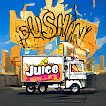 Juice Pass 这张通行证保证您在“Pushin Juice”未来系列中获得免费薄荷糖免费薄荷夏天就在这里！！！ Juice Pass NFT - 常见问题（FAQ） ▶ 什么是果汁通行证？
Juicy Fruits Genesis 多汁水果创世纪统计数据 创建于 5 个月前，777代币供应，5% 费用 Juicy Fruits Genesis NFT 在过去 7 天内售出 1 次。Juicy Fruits Genesis 的总销售额为 0.55 美元。一份 Juicy Fruits Genesis NFT 的
Juicy J's Journey Juicy J的旅程 Juicy J 和 ASTERISK* 与 Everipedia (IQ) 合作推出了 Juicy J’s Journey，这是一个限量的 NFT 集合，以庆祝 Juicy J 的最新专辑 The Hustle Still Continues 的推出。该系列使用区块链技术、数字艺
Juicy J's Journey NFT Drop Juicy J的旅程 Juicy J 和 ASTERISK* 与 Everipedia (IQ) 合作推出了 Juicy J’s Journey，这是一个限量的 NFT 集合，以庆祝 Juicy J 的最新专辑 The Hustle Still Continues 的推出。该系列使用区块链技术、数字艺
Juki Sammy Juki Sammy-介绍： 一共是6666暑假SAMMY合集，随机生成。起风了 JukiSammy #3534 拥有者： [THE_GRINCH] 日程：销售将于 2022 年 8 月 30 日下午 5:03 GMT+8结束 一共是66
Jungle by ESCAPEPLAN ESCAPEPLAN 和 Rich the Kid 的“Jungle”官方 NFT 合集在 Big Night Records 上发布。每个 NFT 代表唱片大师的一定比例，持有者有权在持有者的以太坊地址中获得与 Jungle NFT 相关的累积净艺
Jungle Freaks Motor Club JFMC Jungle Freaks Motor Club NFT 在过去 7 天内售出 20 次。Jungle Freaks Motor Club 的总销售额为 747.74 美元。Jungle Freaks Motor Club NFT 的平均价格为 37.4 美元。有 2,722 名 Jungle Freaks Motor Club 车主，总共拥有 8,888
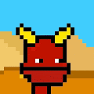 Junior Punks' 少年朋克统计 创建于 8 个月前，5,555 代币供应，8% 费用，4,630 位推特关注者 Junior Punks NFT 在过去 7 天内售出 20 次。Junior Punks 的总销售额为 $1.
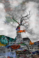 Junipers Last Gasp Juniper’s Last Gasp 及其信息超越了这棵特定的树，因为它分享了不断增长的威胁的故事，这些威胁包括我们的水域、陆地、空气和居住在我们 🌎 星球上的生物。 杜松树在最
Junkie Catz 多边形区块链上的 4444 个 DE 生成头像。Junkie Catz 是对一些不幸的猫科动物爱好者的创造性艺术描绘 - 由 NFT 狂热者团队创作。 这件艺术品在 Polygon Network 上铸造，独一
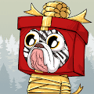 JunkYard Pups Christmas 这一年是 2049 年。人类社会的残余物散落在这片土地上。来自未来的消息警告即将发生猫科动物起义。现在是狗动员起来并为即将发生的事情做好准备的时候了。
Just a GIRL Collection. 女孩是富有表现力和独特的。她们到处都是普通的女孩，但世界上只有她们一个。 只是一个女孩系列。NFT - 常见问题（FAQ） ▶ 什么是 Just a GIRL 系列。？ 只
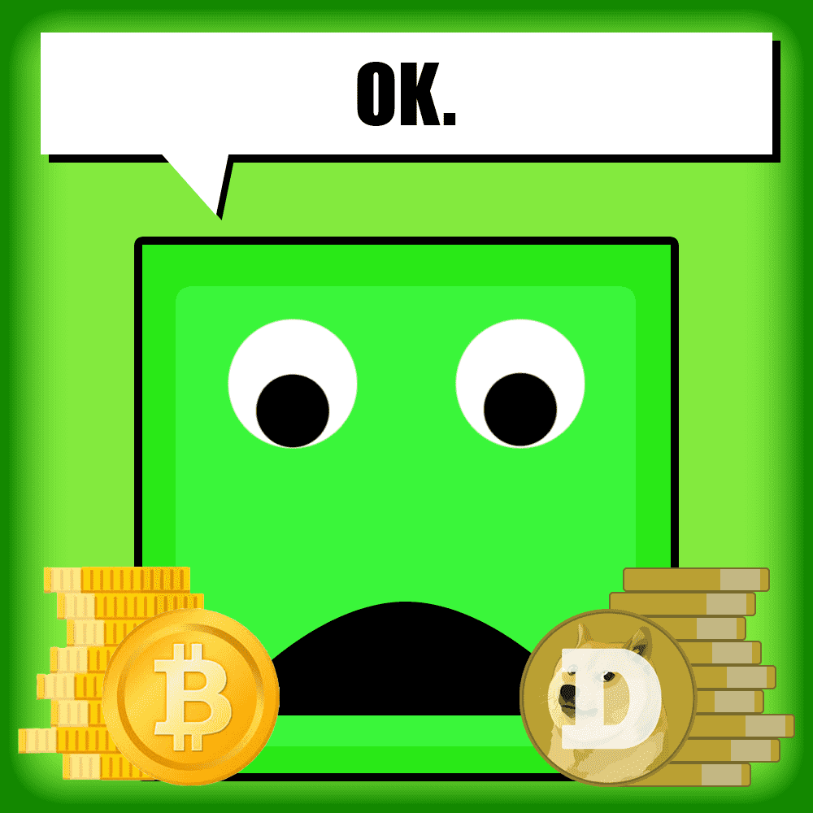 Just A Square OFFICIAL 只是一个正方形是 2000 个正方形的惊人集合！起初区块链只是正方形。加入我们和薄荷。没有路线图，没有公用事业，但我们的持有者有很多惊喜 Just A Square 官方 NFT -
Just Ape NFT Collection Official 只是猿。10,000 只 Apes 的集合，让我们回归基础。没有绒毛，所有的价值。 第 1 季：宽限期结束 猿人， 如果您现在正在阅读本文，则意味着我们已经正式跨
Just Ape NFT Collection Official 第 2 季将提供免费的第 2 代铸币厂Tempus Medallion所需的另一半。 这使得第 2 代至少需要 6 个月的时间。因此，在我们准备开始拉开帷幕之前
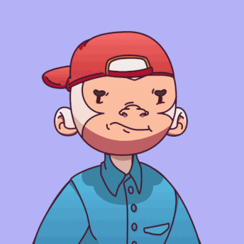 Just Ape NFT Collection Official 我们的任务。 基本信念，而不是路线图。 为什么我们都在这里—— 我们都在这里，因为我们相信同样的事情。对 Web3 的力量及其弥合差距的能力有着共同的信念。
jutes jutes NFT - 常见问题（FAQ） ▶ 什么是黄麻？ jutes 是一个 NFT（不可替代令牌）集合。存储在区块链上的数字艺术品集合。 ▶ 黄麻代币有多少？ 总共有 75 个黄麻 N
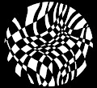 Jynx The Void 欢迎来到 OpenSea 上的 Jynx The Void 之家。发现这个系列中最好的项目。 认识 Jynx……一个对我们的人民来说是陌生的多维生物。他采取了多种形式，会说多种语言，并
KAHIRU NFT Official Collection Presale KAHIRU 是和谐、耐心，甚至是运气。 质押是实时的；持有人数量不准确 - 超过 4.3k NFT 被质押。 由 Hodei Piquer 数字雕刻的 7222 个化身。每个人都属于统治 Ruy 星球的 5 个派系之一。
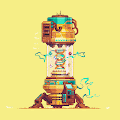 KAIJU EXTRACTED DNA KAIJU EXTRACTED DNA NFT - 常见问题（FAQ） ▶ 什么是 KAIJU 提取的 DNA？ KAIJU EXTRACTED DNA 是一个 NFT（Non-fungible token）集合。存储在区块链上的数字艺术品
Kaiju Kingz Turnables Kaiju Kingz 转盘 NFT - 常见问题（FAQ） ▶ 什么是 Kaiju Kingz 转盘？ Kaiju Kingz Turnables 是一个 NFT（非同质代币）集合。存储在区块链上的数字艺术品集合。 ▶ 有多少 Kaiju Kingz Turnables 代币？ 总
KaijuDoodles 我们欢迎您来到 Kaiju Doodles 的世界！Kaiju Doodles 是以太坊区块链上 555 个随机生成的 NFT 的集合。通过该系列中可以看到的各种配件和特征，每个 Kaiju 都是独一无二的。稀
KaijuFrenz-Genesis 弗伦茨到金兹。KaijuFrenz 是一个 6,666 个算法生成的 Kaijus 集合，它们在元节中横行。加入我们的横冲直撞和！咆哮。 KaijuFrenz：Genes
KALASH47 欢迎来到 OpenSea 上的 KALASH47 之家。布兰·西蒙森 (Bran Symondson) 的 1047 个 NFT 合集，士兵转为雕塑家。一位以 AK47 为媒介的英国艺术家，将可以说是世界上最危险的武器变成了艺术…… KALASH47
KaleidoscopePatterns 这是一个 NFT 集合，包含 5,000 种独特的万花筒状图案。销售所得将用于发展疲惫的迪诺高尔夫俱乐部 通过购买任何 NFT，您将获得终生（也包括商业）的专有使用
KamaGang: The VSFW Edition KamaGang：VSFW 版 NFT - 常见问题（FAQ） ▶ 什么是 KamaGang：VSFW 版？ KamaGang：VSFW 版是一个 NFT（不可替代令
Kamon Symbols by Hakko Daiodo 这是由 On-Chain Asset Store 提供支持的完全链上 NFT 集合之一。家纹是日本的传统，代表着每个家庭的身份。所有矢量资产均由 Hakko Daiodo创建和提供。 这是“链上资产商
Kane Mayfield - Identity - A Year & A Day Kane Mayfield - A Year & A Day NFT - 常见问题（FAQ） ▶ 什么是凯恩梅菲尔德 - 一年和一天？ Kane Mayfield - A Year & A Day 是一个 NFT（不可替代代币）系列。存储在区块链上的数
Kangal One Year Anniversary 一个构建终极 dApps 生态系统的 DAO 生态系统将由仅通过质押铸造的实用代币 $TEAK 提供支持 Kangal 一周年 NFT - 常见问题（FAQ） ▶ 什么是 Kangal 一周年纪念日？ Kangal 一周年纪念日
Kangaroo Heroes Original Kangaroo Heroes 是 5,000 个独特且随机生成的 NFT 的集合，可以访问全国各地的金融知识活动和课程，我们在其中讨论投资、税收、小企业增长等。此外，您的袋鼠英雄将作为 2022


 合作推出了 Juicy J's Journey，这是一个限量的 NFT 集合，以庆祝 Juicy J 的最新专辑 The Hustle Still Continues 的推出。")


 的 1047 个 NFT 合集")